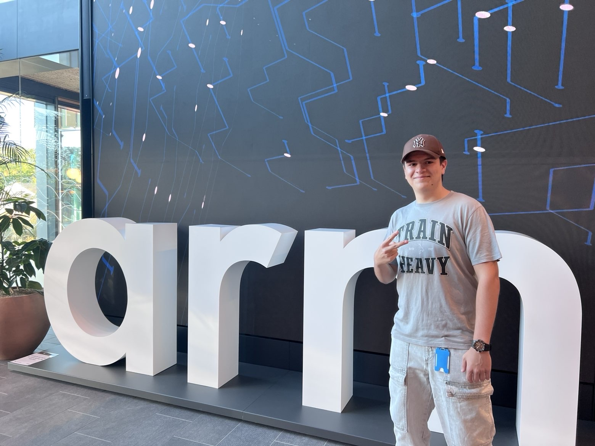
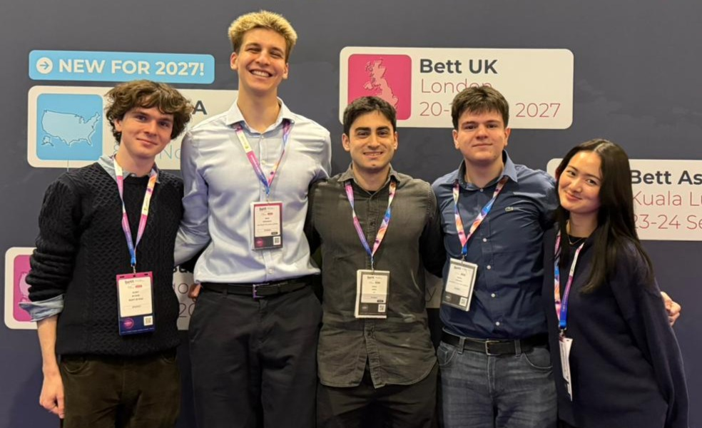
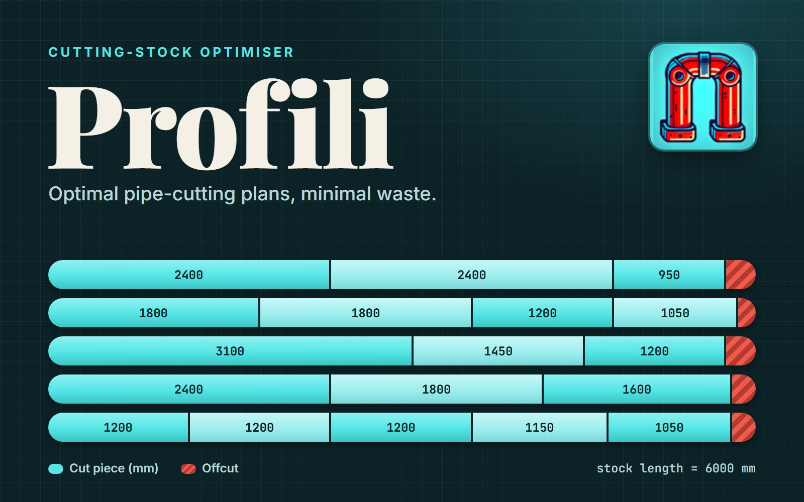
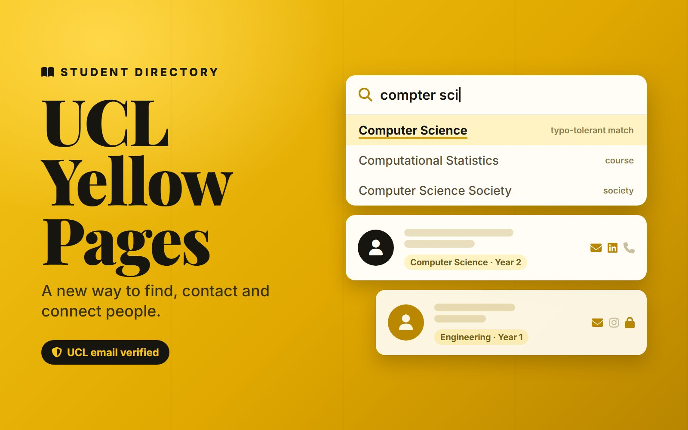

Internship · Summer 2026
Arm: GPU Build Team
Interned on Arm’s GPU build team, owning three open-source Bazel rulesets for building OS images: filesystems, GPT disks and U-Boot images.
The portfolio of Marko Stefanov
Selected work, from build tooling at Arm and a tool running in production to team projects built with industry partners.

Interned on Arm’s GPU build team, owning three open-source Bazel rulesets for building OS images: filesystems, GPT disks and U-Boot images.

An offline app that helps autistic children practise speech by singing along to AI-generated songs about their interests. Built at UCL with IBM, Intel and the National Autistic Society.

A web app that generates optimal pipe-cutting plans. Built to reduce industrial waste at ElektroLab, where it has been used in production for over a year.

A private, student-only directory with UCL email verification, granular privacy controls and typo-tolerant search.
Smaller projects and experiments live on my GitHub profile.